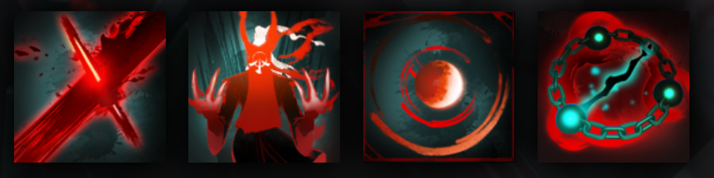

GRIMSTROKE
DISABLES ENEMIES WITH A SWIPE OF HIS BRUSH
HISTORY
The people of Ashkavor crowded around the temple square, eager to witness the ascension of their new guardian -- to stand near the man as he bound their souls to his own. But as his final brush strokes fell against the runestone, and the bond of a new Ascended One was forged, everyone -- even those who'd stayed in their homes -- could sense that something had gone terribly wrong. He knew the cause instantly. The droplets of ichor he'd procured to amplify the potency of his inkpots had instead contaminated them, and the power of the binding spell he'd cast now threatened to consume him. An inky corruption snaked upward from the runestone, along the handle of his brush, soon overtaking his hands. From there it spread quickly. Once it overcame his face and his mouth, he couldn't have screamed even if he'd wanted to. All of his life he'd calculated on how to attain ever greater powers than the limits presented by his teachers would allow--going so far as to break the sacred prohibition against augmenting the inks. Indeed, with the wellspring of the Ascended bond open to him, he felt a measure of power coursing into his soul like he'd never imagined. His greatest triumph was upon him, if he could only survive it. He drew deep from the power of the bond, pushing back against the corrupted ink flow. A great moan filled the air -- the collective cry of his people. Some swayed on their feet. The weakest collapsed. Many tried to run. And still deeper he pulled from their bloodline reservoir. But it wasn't enough to stop the ink tide. It was only when the breath trapped in his lungs began to fail him, and the inkpool darkness fully encased him, that he saw his way out. The bond he'd made with the Ashkavoran people -- his people -- meant to be drawn upon only in service of their protection... It flowed two ways. With a final surge of strength -- this time directed by more than just blind repulsion -- he pushed the ink torrent into the bond itself. Slowly, he felt the tide retreat... and heard the awful wails of his people as the corruption in turn rolled over them. When at last the ink relented, his eyes opened upon a world changed. The Ashkavoran people as he knew them were gone. Every last soul was transformed into terrifying shades of their former selves -- comprised no longer of blood and bone, only viscid, tainted ink.
ABILITIES
PAIRD WELL WITH
LINA
LION
BANE